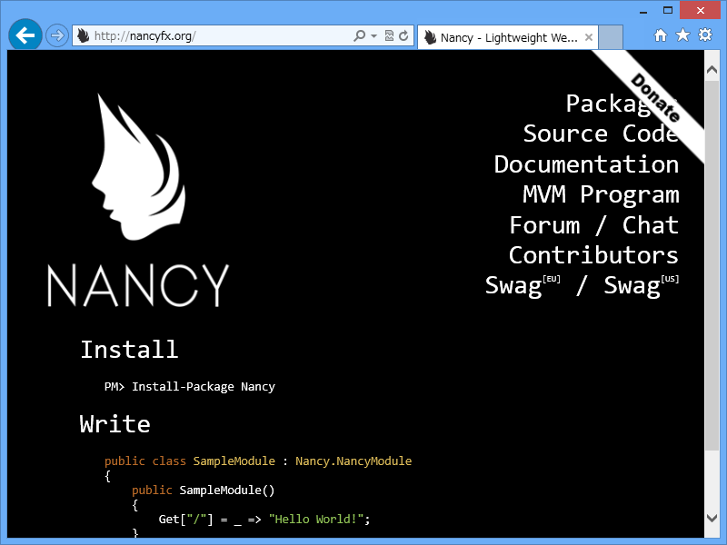
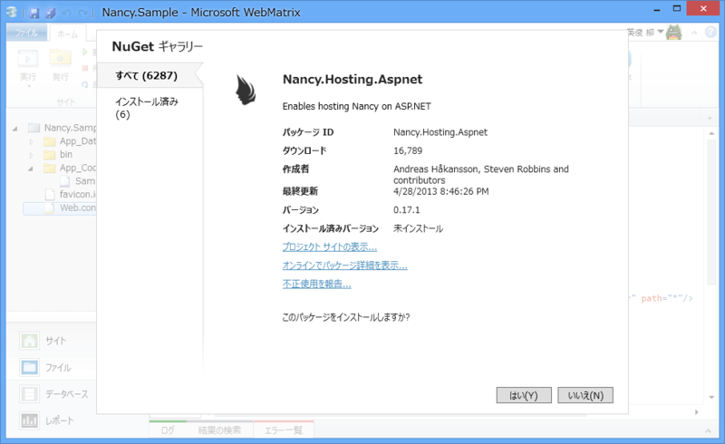
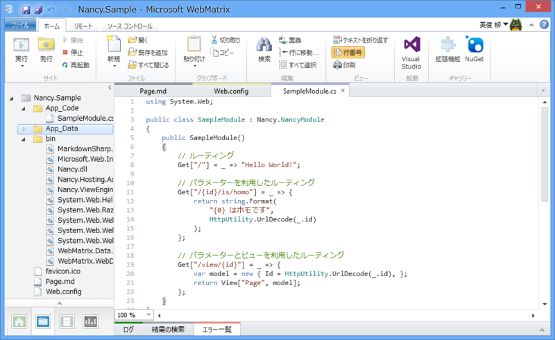
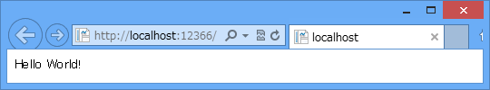
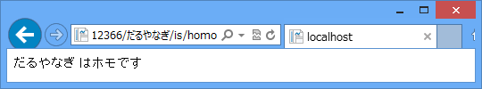
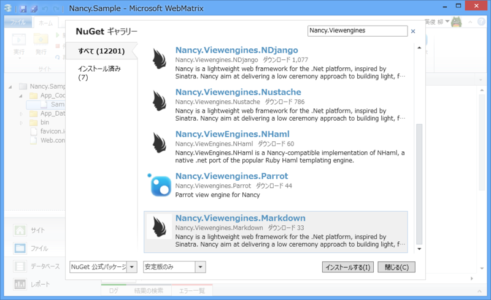
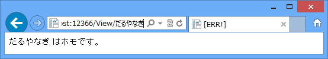

WebMatrix 3: Sinatra on ASP.NET 「Nancy」 を利用する
公開日：

Nancy is a lightweight, low-ceremony, framework for building HTTP based services on .Net and Mono. The goal of the framework is to stay out of the way as much as possible and provide a super-duper-happy-path to all interactions.
Scott Hanselman 氏のブログ（One ASP.NET: Nancy.Templates for Visual Studio - Scott Hanselman）で知ったのですが、 「Nancy」なんてのがあるんですね！
前々からこういうのがほしいなって思ってたんですよね……。
個人的に一番おすすめなのは Pure HTML または Razor （ASP.NET Web Pages）かな。 HTML5/CSS3（Pure HTML）で書くところからはじめて、変数とテンプレート、初歩的なデータベースが使いたくなれば Razor へ進めばいい。もっと大規模なWebサイトであれば、 ASP.NET MVC が利用できるけど、これはちょっと個人用途にはデカすぎる気がした（その中間に、 Ruby で言えば Sinatra とか、軽いフレームワークがあればいいなぁ、と思う）。仮想化だのクラウドだのという言葉を忘れて、 HTML ファイルひとつ、ぽつんと Azure Web Sites に置くところから始めてもらえればと。
で、試そうかなって思ったまま、ちょっとストアアプリの方に浮気している間に、しばやん氏がいろいろ調べてくれていました。
ありがとう！ さっそく WebMatrix で動かしてみますかネ。
ちなみに、Nancy は Frank Sinatra のお嬢さんです（ナンシー・シナトラ - Wikipedia）。Sinatra の名前も Frank Sinatra から来ているはず。
NuGet パッケージのインストール

NuGet Gallery | Nancy.Hosting.Aspnet 1.4.1 をインストール。NuGet Gallery | Nancy 1.4.5 のインストールに加え、Web.config の構成（Hosting Nancy with asp.net · NancyFx/Nancy Wiki · GitHub）なんかもしてくれるみたいです。
App_Code に Nancy Module を記述

このブログではすっかりお馴染み、App_Code フォルダに C# を記述するスタイルを今回も採用。Web Matrix には Razor C# の補完機能はあっても C# の補完機能はないので、Visual Studio にスイッチしてゴリゴリ書くのがおすすめ。まぁ、この程度ならインテリセンスはなくてもいいけど。
基本的なパターンの記述（Literal segments）

public class SampleModule : Nancy.NancyModule { public SampleModule() { Get["/"] = _ => "Hello World!"; } }
GET、POST、PUT、DELETE……といった動詞（メソッド）にインデクサでパス（パターン）を指定して、レスポンス（アクション）をラムダ式でブチ込むだけ。簡単━━━━━━(ﾟ∀ﾟ)━━━━━━!!!!
パラメーター（Capture segments）

public class SampleModule : Nancy.NancyModule { public SampleModule() { Get["/{id}/is/homo"] = _ => { return string.Format( "{0} はホモです", HttpUtility.UrlDecode(_.id) ); }; } }
パラメーターも扱えるみたい。
ほかにも /{name?} でオプションパラメーター（なくてもいいパラメーター）や、/{name?unnamed} でデフォルト値を指定したパラメーターなんかも使える。
正規表現（RegEx Segment）
本家 Sinatra は正規表現なんかも使えたと思うのだけど、正規表現リテラルのない C# ではちょっと難しいかな？
Delete[@"/products/(?<id>[\d]{1,7})"] = parameters => { return 200; };
……と思ったらぜんぜんイケるし。
以上、おおまかに3種類のパターンが指定できる。
ビューとビューモデル
実はこのままだとビューを返すことは出来ません。Nancy はデフォルトでビューエンジンを持っていないので、使いたいビューエンジンを NuGet からインストールする必要があります。
現在公開されている Nancy 用のビューエンジンは以下の通りです。
- Nancy.Viewengines.Razor
- Nancy.Viewengines.Spark
- Nancy.Viewengines.DotLiquid
- Nancy.Viewengines.NDjango
- Nancy.Viewengines.Nustache
- Nancy.ViewEngines.NHaml
- Nancy.Viewengines.Parrot
- Nancy.Viewengines.Markdown
これは NuGet のパッケージ ID となっているので、使いたいものをインストールしてください。今回は面白そうだったので Markdown を選択してみました。

わしも今回は Markdown を使ってみたのだけれど、リポジトリのソースを WebMatrix パッケージから NuGet 公式に変更しないと検索で出てこなかった。WebMatrix にもコマンドラインでインストールする手段があればいいなぁ（もうあるのかな？）。

public class SampleModule : Nancy.NancyModule { public SampleModule() { Get["/view/{id}"] = _ => { var model = new { Id = HttpUtility.UrlDecode(_.id), }; return View["Page", model]; }; } }
使い方はこんな感じ。ビューは Page.md としてルートに配置しておいた。
<!DOCTYPE html><html lang="en"> <head> <meta charset="utf-8" /> <title>@Model.Title</title> </head> <body> <p>@Model.Id はホモです。</p> </body> </html>
ビューモデルを dynamic で渡してやれば、ビューが分から参照できる*1。どうにかしてレイアウトを使えるようにしたいな。
まとめ
- WebMatrix からも問題なく利用できる
- メソッド、パターン、アクションを指定するだけ
- パターンには Literal、Capture、Regular Expression の3つが利用できる
ASP.NET Web Pages（WebMatrix）はファイル指向で、ファイルを増やして“静的なコンテンツ”を増やすアプローチ。個人向け Web サイトをちょっと動的に実装したい場合などに向いている。
Nancy/Sinatra はパターン・アクション指向。パターンを記述していくことで、“機能を動的に”追加していける。Web API に実装に向いてそう。
もちろん、二つを組み合わせてもよいと思う。関連 NuGet の名前を眺めているだけでもかなりのことができそうなので、これからもちょくちょく試してみたい。
*1:参照できなければ ERR! が表示されるようだ